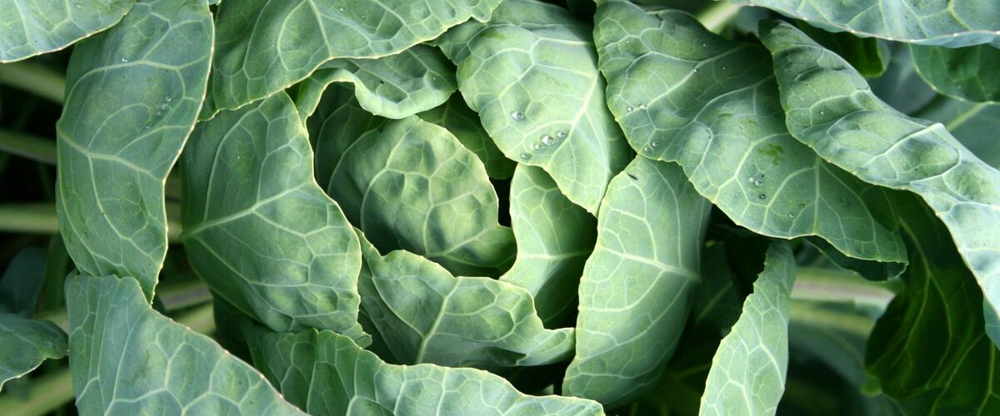

When to plant cabbage in Lakeview, OR
Start cabbage from seed indoors Mar 19 – Apr 2, then plant the young plants in the garden in Lakeview May 7 – Jun 11.
- Difficulty
- Moderate
- Sun
- Full sun
- Spacing
- 18 inches apart
- Planting depth
- Plant starts at the depth they grew in the pot
- Frost
- Handles light frost
- First harvest
- About 75 days after planting
Why these dates
Lakeview's typical last spring frost is June 4. As a cool-season crop that handles light frost, this crop can go in about 4 weeks before that.
High desert and mountains. Central and high eastern Oregon. Frost is possible almost any month. Use row covers, wall-o-water or cloches for warm crops, and choose short-season varieties.
How to grow cabbage in Lakeview
- Start seeds indoors Mar 19 – Apr 2 in trays or small pots under a grow light or in your sunniest window. Or skip this step and buy young plants (starts) at a garden center.
- Harden off the young plants: about a week before planting, set them outside for a few hours a day, a little longer each day.
- Plant them in the garden May 7 – Jun 11, 18 inches apart. Plant starts at the depth they grew in the pot.
- Water deeply once or twice a week rather than a little every day, and mulch once the soil is warm.
- Harvest: Cut when heads feel firm when squeezed. Water evenly to keep heads from splitting.
Key numbers
- Soil 50°F or warmerPlant out
- 6.0–7.5Soil pH
- 1–1.5 inches a week, evenlyWater
- Split heads, root maggotsBiggest risk
Top care tip: Water evenly, about an inch a week, because a dry spell followed by a soaking splits heads.
Growing notes
What makes the difference in Northwest gardens, in plain language.
Soil and feeding
Cabbage needs fertile soil and steady nitrogen to build a big head. Mix compost and a balanced vegetable fertilizer into the bed before planting, and side-dress once the plants start to fill out. A pH around 6.0 to 7.5 suits it, and keeping the soil from getting too acidic helps prevent clubroot. Mulch after the soil warms to hold moisture and keep weeds down. Like broccoli, set transplants at the depth they grew in the pot and give each one the full 18 inches.
Why heads split
A cabbage head splits when it takes up a lot of water fast, often after a heavy rain or deep soaking that follows a dry spell. The inside grows faster than the outer leaves can stretch. Even watering is the best prevention. If a firm head is ready and big rain is coming, either harvest it or give the plant a twist to break some of its roots, which slows water uptake. Early Jersey Wakefield and Golden Acre are quick, small-headed types for spring, while January King is grown for fall and winter harvest west of the Cascades.
Pests, harvest and storage
Cabbage worms, root maggots and gray aphids all go after cabbage in the Northwest. Row cover from planting day handles the first two, and a strong spray of water knocks aphids back. Slugs also hide between the outer leaves in wet weather. Cut heads when they feel solid when squeezed. A whole, dry head keeps for weeks, even a couple of months, in a cold fridge or cool root cellar. Leave the stump in the ground in mild areas and it may sprout a few small bonus heads.
Common questions
When is the last frost in Lakeview, OR?
Typically June 4. In 9 years out of 10, frost is over by June 22. These are 1991–2020 NOAA climate normals for Lakeview.
Is it too late to plant cabbage in Lakeview?
The spring planting window runs through June 11. Later plantings tend to struggle in summer heat.
When should I start cabbage from seed indoors in Lakeview?
March 19 to April 2, which is 7 to 5 weeks before the May 7 planting date. Or buy young plants at a garden center instead.
Why did my cabbage split open?
A sudden rush of water, from rain or a big watering after dry soil, made the inside grow faster than the outer leaves. Water evenly and harvest heads soon after they firm up. A split head is still fine to eat if you use it soon.
Why isn't my cabbage forming a head?
Common causes are too little nitrogen, too much heat, crowding, or stressed transplants. Give plants rich soil, full sun, 18 inches of space and even water. Fall crops often head more reliably here because they mature in cool weather.
How do I know when cabbage is ready to pick?
Squeeze the head: when it feels firm and solid all the way through, it's ready. Don't wait long after that, since mature heads can split. Cut it at the base with a sharp knife.
Also plant in Lakeview around the same time
Planting dates for cabbage in nearby areas
- Bend and Redmond, OR May 12 – Jun 16
- Klamath Falls, OR May 12 – Jun 16
- Burns, OR May 14 – Jun 18
- Prineville, OR May 4 – Jun 8
- Madras, OR Apr 21 – May 26
- Baker City, OR Apr 27 – Jun 1